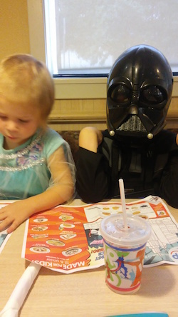
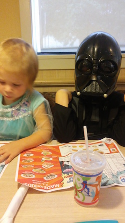

Molly: 7 years old

Uriah: 6 years old

Addie: 4 years old (Addie's the one next to Darth Vadar.)
It's pretty complicated at this point. I'm seperated from my husband Andrew because of domestic abuse. Sooo...married but...yeah.
Molly: 7 years old
Uriah: 6 years old
Addie: 4 years old (Addie's the one next to Darth Vadar.)
One of my favorite sites where I learned to knit is Creative Bug. They have great video tutorials that actually make sense!
Craftsy has great tutorials for making your own patterns and learning how to sew various articles of clothing (just to name a few!)
There are several resources I've used to teach myself HTLM, CSS and JavaScript before taking CodeCraft's Full-Time Full-Stack Web Development Bootcamp. They include: CodecademyFree Code Camp and Udacity
Some of my favorite books include the Harry Potter series, The Girl Who Started to War to End All Wars written by Rachelle McCalla who's a friend of mine.